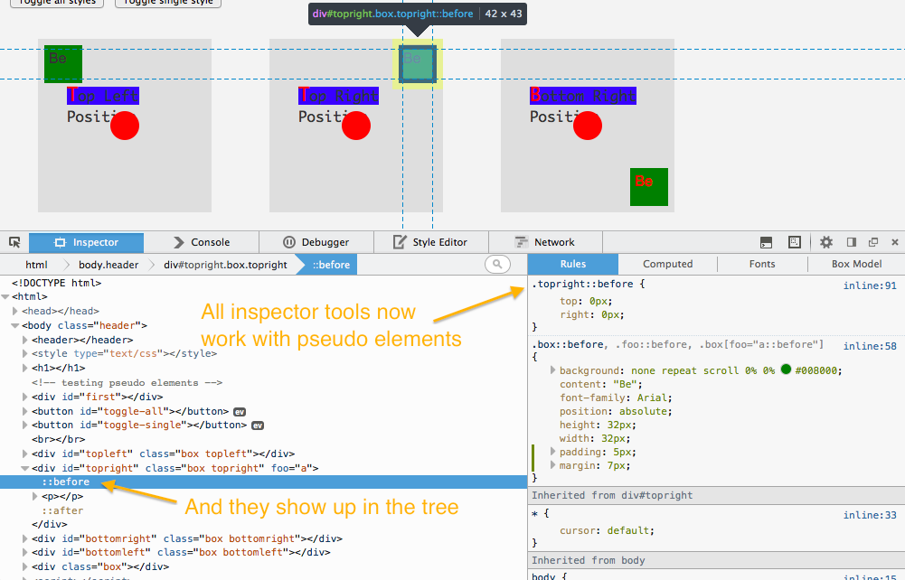
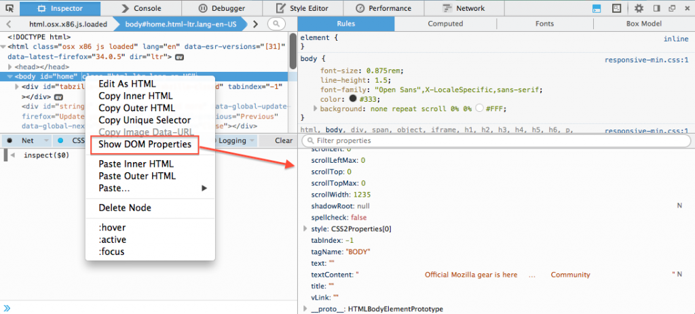
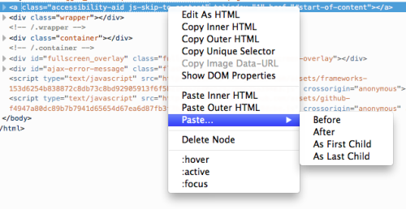
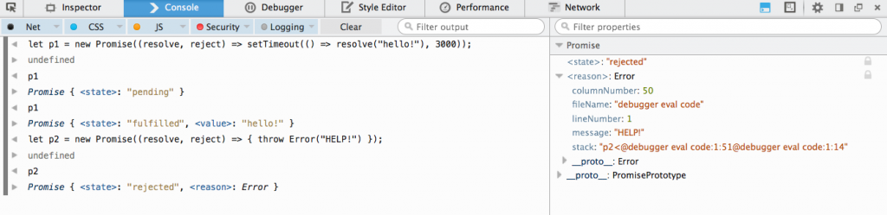
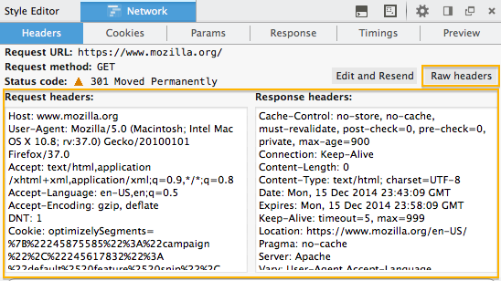

「Promise」檢視功能、虛擬元素 (Pseudo element)、原始檔頭 (Raw header)，還有更多
Firefox 36 現已進入「開發者 (Developer) 」版本釋出頻道，先來看看又新增了哪些重要的開發者工具。另外針對開發者版本發表之前不久一起釋出的 Firefox 35，也將一併說明其上的數項變化。
檢測器 (Inspector)
現在已可檢測「::before」與「::after」這兩種虛擬元素 (Pseudo element)。而這些元素在「標記結構樹狀檢視欄 (Markup tree)」與「檢測器」側邊欄中的呈現方式，均與其他元素相同 (版本 35 的開發討論記錄)。

標記結構樹狀檢視欄的右鍵選單現新增了「顯示 DOM 屬性 (Show DOM Properties)」(版本 35 的開發討論記錄、MDN 上的本功能說明文件)。

Box Model 的強調功能 (Highlighter) 現可用於遠端的目標元素上，因此不論是在 Firefox for Android 頁面或是 Firefox OS App 上除錯，都能有完整的強調功能 (版本 36 的開發討論記錄，還有技術說明文章可帶你建構自訂的強調器)。
現在亦可於標記結構樹狀檢視欄中看到 Shadow DOM 內容。另請注意：開發者必須將 dom.webcomponents.enabled 設定為「true」，進而測試此功能 (版本 36 的開發討論記錄，並可參閱 bug 1053898 以了解相關資訊)。
我們另外從 Firebug 借用了一項功能，只要對標記結構樹狀檢視欄中的節點按下滑鼠右鍵，就能獲得更多「貼上 (Paste)」的功能選項 (版本 36 的開發討論記錄、MDN 上的本功能說明文件)。

而 Firefox 35 與 36 中的檢測器另有更多變化：
- 在刪除節點後，會選擇前一個相鄰節點，而不會選到上層節點 ( 版本 36 的 開發討論記錄)
- 在「M arkup view」 模式中，將滑鼠游標停於節點之上，將以更強烈的對比效果顯示 ( 版本 36 的 開發討論記錄) 。
- 在「計算樣式 computed 」檢視分頁中，將滑鼠游標停於 CSS 選擇器之上，即可強調顯示網頁上符合該選擇器的所有節點 ( 版本 35 的 開發討論記錄) 。
除錯器 (Debugger)＼主控台 (Console)
現在已可檢視 DOM Promises，並能隨時檢視 Promises 的狀態與數值 (版本 36 的開發討論記錄)。

經過「eval」函式執行的程式碼，均可由除錯器辨識並搭配除錯 (版本 36 的開發討論記錄)。
「eval」函式執行的程式碼現支援 //# sourceURL=path.js 語法，使其於除錯器中，以及由 Error.prototype.stack 回報的呼叫堆疊中，均顯示為正常檔案。可參閱 http://fitzgeraldnick.com/ weblog/59/ 以進一步了解 (版本 36 的開發討論記錄；更多討論記錄)。
主控台內的訊息除了顯示既有的「行」數之外，亦提供來源程式碼的「欄」數 (版本 36 的開發討論記錄)。
WebIDE
開發者現可透過 WebIDE 連上 Firefox for Android。可參閱 MDN 上的《debugging firefox for android》以進一步了解 (版本 36 的開發討論記錄)。
另外進行數項修正，提升 WebIDE 的使用者經驗：
- 當選擇某執行環境 (Runtime) 的 App ＼分頁時，亦預設帶出開發者工具 ( 版本 35 的 開發討論記錄) 。
- 若連接執行環境時，就會重新連上該環境中最近開啟過的 App 專案 ( 版本 35 的 開發討論記錄) 。
- 如果找得到最近使用的執行環境，則會自動選擇並連線 ( 版本 35 的 開發討論記錄) 。
- 可縮放字形大小 ( 版本 36 的 開發討論記錄) 。
- 只要輸入網址 ( 如： http://example.com) ，即可新增托管＼ 架設式 (Hosted) App 專案，而不需再輸入 manifest.webapp 檔案的完整路徑 ( 版本 35 的 開發討論記錄) 。
網路監測器 (Network Monitor)
新增了純文字的請求＼回應檔頭 (Request/response header) 檢視模式，可輕鬆檢視並複製某一請求上的原始檔頭 (版本 35 的開發討論記錄)。

另列出已解決的 Firefox 35 錯誤，以及已解決的 Firefox 36 錯誤。
如果你有任何問題、意見、功能需求，甚或想回報錯誤，同樣都能在下方留言，到 UserVoice 填寫＼投票給某個意見，也能到 Twitter 上聯絡 @FirefoxDevTools 團隊。
原文連結：Pseudo elements, promise inspection, raw headers, and much more – Firefox Developer Edition 36